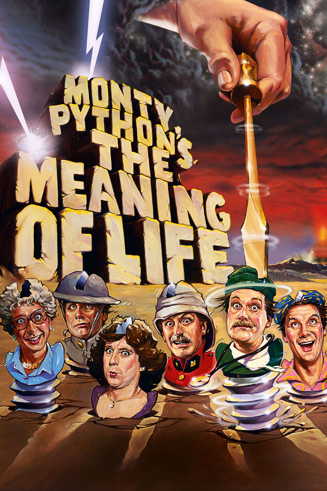
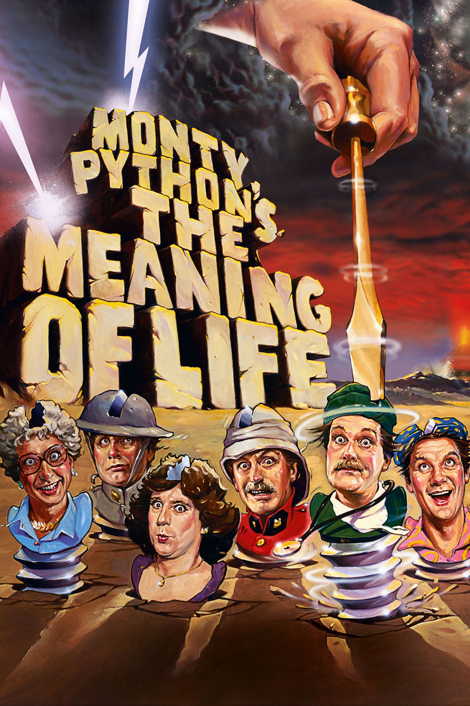

The team's ‘Big Red Book’ (published, with a blue cover, in 1971) sold out its initial print run within a week. Its follow-up, ‘The Brand New Monty
Python Book’, amassed advance sales of over 100,000. At the same time they also released a string of hugely-popular vinyl albums, masterfully seizing
the full imaginative potential of the audio medium. (‘Matching Tie and Handkerchief’ was the first three-sided record album). It is impossible to
overestimate the importance of these items.  In the days before home video, it was through their books and records that fans
were able to relive and memorise their favourite Python moments. In 1971 the Pythons' first film, ‘And Now for Something Completely Different’, was produced as a means of
introducing the group to American audiences, particularly the college crowd. The movie, a remounted collection of sketches, received a surprisingly
strong response in England, despite the familiarity of the material from the original TV broadcasts. The Pythons received a similarly strong welcome
when they performed live on stage, on tours of England and Canada, and finally at London's Theatre Royal, Drury Lane. Sparked by FM radio broadcasts
of the Pythons' records, imports of the books and clips shown on TV, interest in the group grew in the United States until, in 1974, public television
station KERA-TV in Dallas, Texas, became the first to air ‘Monty Python's Flying Circus’. Other PBS stations followed suit, providing an eager fan base
for the group's second movies, released in early 1975. The group had wanted to further explore the creative opportunities of feature films. Just as
production of the TV series was winding down (Cleese had announced his intention to withdraw from the show), they shot ‘Monty Python and the Holy Grail’.
A hilarious skewering of the Arthurian legend, it was directed by Jones and Gilliam, its low budget funded by a roll call of rock stars.It was a hit on both sides
of the Atlantic. The Pythons consolidated their status as comedy stars with a series of sold–out shows at New York’s City Center in 1976.The ‘70s ended with the Pythons
regrouping for what many consider their most accomplished work, the mock-Biblical epic, ‘Life of Brian’. The film attracted controversy even before the cameras started
rolling, when its original producers objected to the film’s subject matter and withdrew funding, prompting former Beatle George Harrison to personally bankroll the production.
It became a box office smash, despite protests from evangelicals and countless local authorities worldwide banning its screening. The 1980s saw the group begin to wind down,
with a lap of victory at the Hollywood Bowl (recorded and released as a concert film), the bestselling ‘Contractual Obligation Album’, and in 1983 a final cinema outing with
‘The Meaning of Life’, a dark, ribald symphony of excess and meditation on mortality.
In the days before home video, it was through their books and records that fans
were able to relive and memorise their favourite Python moments. In 1971 the Pythons' first film, ‘And Now for Something Completely Different’, was produced as a means of
introducing the group to American audiences, particularly the college crowd. The movie, a remounted collection of sketches, received a surprisingly
strong response in England, despite the familiarity of the material from the original TV broadcasts. The Pythons received a similarly strong welcome
when they performed live on stage, on tours of England and Canada, and finally at London's Theatre Royal, Drury Lane. Sparked by FM radio broadcasts
of the Pythons' records, imports of the books and clips shown on TV, interest in the group grew in the United States until, in 1974, public television
station KERA-TV in Dallas, Texas, became the first to air ‘Monty Python's Flying Circus’. Other PBS stations followed suit, providing an eager fan base
for the group's second movies, released in early 1975. The group had wanted to further explore the creative opportunities of feature films. Just as
production of the TV series was winding down (Cleese had announced his intention to withdraw from the show), they shot ‘Monty Python and the Holy Grail’.
A hilarious skewering of the Arthurian legend, it was directed by Jones and Gilliam, its low budget funded by a roll call of rock stars.It was a hit on both sides
of the Atlantic. The Pythons consolidated their status as comedy stars with a series of sold–out shows at New York’s City Center in 1976.The ‘70s ended with the Pythons
regrouping for what many consider their most accomplished work, the mock-Biblical epic, ‘Life of Brian’. The film attracted controversy even before the cameras started
rolling, when its original producers objected to the film’s subject matter and withdrew funding, prompting former Beatle George Harrison to personally bankroll the production.
It became a box office smash, despite protests from evangelicals and countless local authorities worldwide banning its screening. The 1980s saw the group begin to wind down,
with a lap of victory at the Hollywood Bowl (recorded and released as a concert film), the bestselling ‘Contractual Obligation Album’, and in 1983 a final cinema outing with
‘The Meaning of Life’, a dark, ribald symphony of excess and meditation on mortality.

 
